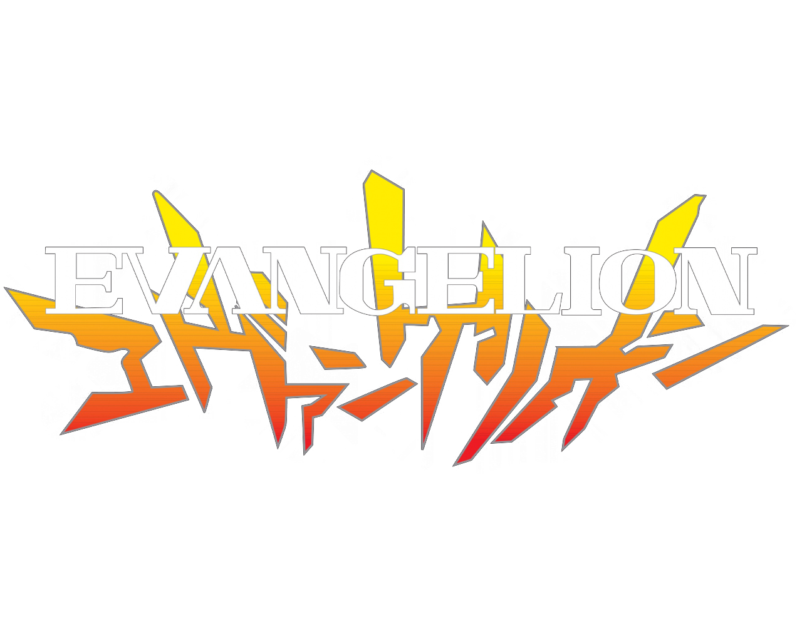

新世紀エヴァンゲリヲン
あらすじ
謎の生命体「使徒」が
襲来し、人類は窮地に。
少年・碇シンジは父に
呼ばれ汎用人型決戦兵器
エヴァンゲリオンのパイ
ロットとなり仲間たちと
共に世界の命運を賭けた
戦いに身を投じる。
汎用人型決戦兵器
「汎用人型決戦兵器」ことエヴァンゲリオンは、謎の生命体「使徒」
に対抗するため、特務機関ネルフが開発した唯一の有効な兵器です。
その正体は巨人のような生体であり、人型の装甲は強大な力を制御す
るための拘束具としての側面も持ちます。特別な適性を持つ少年少女
「チルド レン」がエントリープラグに乗り込み、神経を接続して操縦。
彼らの精神とシンクロすることで活動しますが、外部からの電力供給
が途絶えると活動時間がわずか数分に制限されるという大きな弱点を
抱えています。人類の命運を賭け、彼らは使徒との過酷な戦いに身を
投じます。
みどころ
巨大な人型兵器エヴァと、不可解な使徒と
の予測不能な激戦は、視聴者を圧倒します。
未熟な少年少女パイロットが直面する心の
葛藤や成長、深遠な人類補完計画の謎、そ
して「人間とは何か」という根源的な問い
を突きつける哲学的なテーマが見どころで
す。